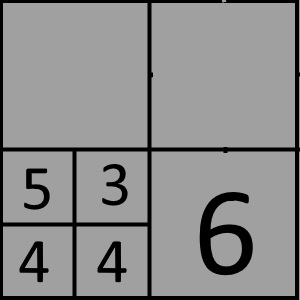

This is a simple game where you need to to use the 4 numbers shown below in the 4 squares, combine them using any of the four arithmetic operation namely addition, subtraction, multiplication and division to come up with the result of 24.
You can apply the operations in such a way that you can simulate using parantheses for controlling how you apply the operations.
As an example, say you are given four numbers 1,2,3, and 4.It is easy to see that you simply need to multiply these 4 numbers together to make 24.
In another example you are given the numbers 6,4,3, and 3. Now you can immediately see that if you multiply 6 and 4 you have 24 but then what to do with the two 3s that you have. You can multiply with one 3 and then divide by the other 3 there by nullifying the effect of two 3s with each other.
There will be other situations where you will need to think more deviously.
Shown below is a sample board at the start. You should figure out how you are going to solve the problem first. The following problem shows the numbers 1,1,4,6. Now you can see immediately that 6 times 4 gives you 24 so what to do with the other two numb ers 1 and 1. It is easy to incorporate those numbers by simply multiplying the result by each of them so you can find the answer by 6X4X1X1. you start the play by dragging 1 on the cell with the other 1 and drop it on that cell. The result will look like the second picture. the four squares contain the result of four arithmetic operations i.e. 1+1,1-1,1X1 and 1/1. Next click on one of two cells containing 1 and drag it to the cell containing 4 and drop it there. the result shows the computation of 4+1,4-1,4X1 and 4/1 in the third picture. Now grab 4 and drop it on 6 and that will result in the fourth and final picture. if you successfully solve the problemthen one of the cells in the final display will contain the number 24 in red and there will be a congratulatory message on the screen confirming that you have completed the problem.
You have the optionof backing out of the latest move or "Undoing" your last move if you think you made a mistake. If you want to redo more than one move then it is better to restart the problem by clicking restart.
The difference between New Game and Restart is that the new game will give you a fresh set of numbers to solve and the restart will give you the same numbers to solve again.Figure 1 |
Figure 2 |
Figure 3 |
Figure 4 |
|  | |||
| "Screen 1" | "Screen 2" | "Screen 3" | "Screen 4" |